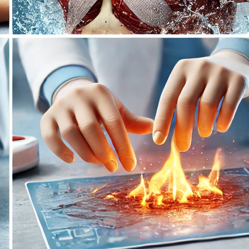
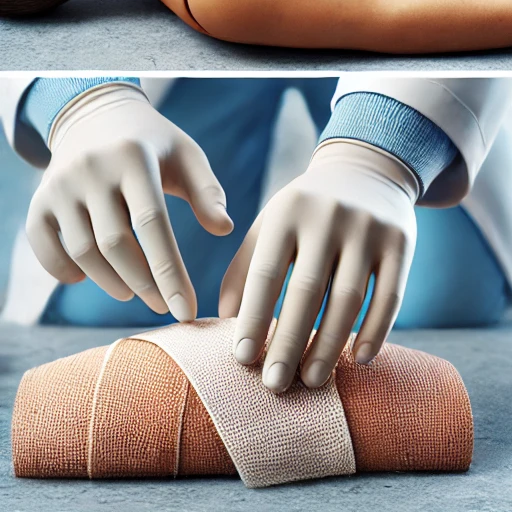

صور توضيحية لإجراءات الإسعافات الأولية
الإنعاش القلبي الرئوي (CPR)

الإنعاش القلبي الرئوي (Cardiopulmonary Resuscitation - CPR) هو تقنية طارئة تُستخدم لإنقاذ حياة الأشخاص الذين تعرضوا لتوقف القلب أو التنفس المفاجئ. يُعد هذا الإجراء جزءًا أساسيًا من الإسعافات الأولية، حيث يساعد على الحفاظ على تدفق الدم المؤكسج إلى الدماغ والأعضاء الحيوية الأخرى حتى وصول المساعدة الطبية المتخصصة.
مكونات الإنعاش القلبي الرئوي:
يتكون الإنعاش القلبي الرئوي من مرحلتين رئيسيتين:
- الضغطات الصدرية: الضغطات الصدرية تهدف إلى إعادة تشغيل القلب عن طريق الضغط المنتظم على الصدر. يتم تنفيذ الضغطات الصدرية بوضع اليدين على وسط الصدر والضغط بقوة وبسرعة بمعدل 100 إلى 120 ضغطة في الدقيقة. يجب أن يكون عمق الضغطات حوالي 5 سم للبالغين.
- التهوية الاصطناعية (الإنعاش الرئوي): إذا كان الشخص الذي يقوم بالإنعاش مدربًا، يمكنه إجراء التهوية الاصطناعية. يتم ذلك عبر إغلاق الأنف ونفخ الهواء في فم المصاب مرتين بعد كل 30 ضغطة صدرية. في حالات أخرى، يمكن الاقتصار على الضغطات الصدرية فقط إذا كان المنقذ غير مدرب بشكل كافٍ.
أهمية الإنعاش القلبي الرئوي:
الإنعاش القلبي الرئوي يزيد من فرص بقاء الشخص على قيد الحياة عند تنفيذه بسرعة وبشكل صحيح بعد توقف القلب المفاجئ. مع كل دقيقة تمر دون إجراء الإنعاش القلبي الرئوي، تنخفض فرصة بقاء المصاب بنسبة 7% إلى 10%. لذلك، فإن سرعة الاستجابة تعد أمرًا بالغ الأهمية.
الخطوات الأساسية لإجراء الإنعاش القلبي الرئوي:
تشمل الخطوات الأساسية للإجراء ما يلي:
- التأكد من سلامة المكان: قبل البدء في أي إجراء، تأكد من أن المكان آمن لك وللمصاب.
- تحقق من استجابة المصاب: انظر إذا كان المصاب يتنفس أو يظهر أي علامات للحياة. إذا لم يكن هناك استجابة، يجب البدء فورًا بالإنعاش القلبي الرئوي.
- الاتصال بالطوارئ: اطلب المساعدة الفورية من خدمات الطوارئ (911 أو الرقم المحلي للطوارئ).
- البدء في الضغطات الصدرية: ضع يديك في منتصف صدر المصاب وابدأ بالضغط بقوة وبشكل منتظم.
- إجراء التنفس الاصطناعي (إذا كنت مدربًا): بعد كل 30 ضغطة، قم بنفخ الهواء مرتين في فم المصاب.

علاج الحروق
الحروق هي إصابات تصيب الجلد نتيجة تعرضه للحرارة الشديدة، المواد الكيميائية، الكهرباء، أو الإشعاع. تختلف درجات الحروق من بسيطة إلى خطيرة، ويتم تصنيفها حسب عمق الإصابة إلى ثلاث درجات رئيسية.
تصنيفات الحروق:
- حروق الدرجة الأولى: تصيب الطبقة الخارجية من الجلد وتسبب احمرارًا وألمًا طفيفًا. يتم علاجها عادةً في المنزل.
- حروق الدرجة الثانية: تمتد إلى الطبقة الثانية من الجلد وتسبب ظهور فقاعات وبثور. قد تتطلب عناية طبية في بعض الحالات.
- حروق الدرجة الثالثة: تصل إلى الطبقات العميقة من الجلد وتؤدي إلى تدمير الأعصاب. هذه الحروق خطيرة وتحتاج إلى تدخل طبي فوري.
الإسعافات الأولية لعلاج الحروق:
عند التعرض لحروق، من المهم التصرف بسرعة لتقليل الضرر والسيطرة على الألم. إليك الخطوات الأساسية لعلاج الحروق:
- تبريد المنطقة المصابة: ضع الجزء المحروق تحت ماء بارد (وليس مثلج) لمدة 10-20 دقيقة. هذا يساعد على تقليل الحرارة ومنع تفاقم الإصابة.
- تغطية الحرق: بعد تبريد الحرق، قم بتغطية المنطقة المصابة بضمادة معقمة أو قطعة قماش نظيفة غير لاصقة لتجنب التلوث.
- تجنب استخدام الثلج: لا تضع الثلج مباشرة على الحرق، حيث يمكن أن يزيد من تلف الأنسجة.
- تجنب فقع الفقاعات: إذا ظهرت فقاعات على الجلد، تجنب فقعها لأن ذلك يمكن أن يؤدي إلى العدوى.
- استخدام مسكنات الألم: إذا كان الألم شديدًا، يمكن تناول مسكنات الألم مثل الباراسيتامول أو الإيبوبروفين لتخفيف الألم.
متى يجب زيارة الطبيب؟
في بعض الحالات، يكون من الضروري الحصول على عناية طبية فورية. يجب زيارة الطبيب في الحالات التالية:
- إذا كان الحرق يغطي منطقة كبيرة من الجسم أو الوجه أو اليدين أو المفاصل.
- إذا كانت الحروق عميقة أو من الدرجة الثالثة.
- إذا كنت تشك في حدوث عدوى (احمرار شديد، تورم، إفرازات).

تضميد الجرح
تضميد الجرح هو جزء أساسي من الإسعافات الأولية، حيث يهدف إلى حماية الجرح من التلوث وتقليل خطر الإصابة بالعدوى. يتم استخدام الضمادات لتغطية الجروح بشكل صحيح وللمساعدة في تسريع عملية الشفاء. سواء كانت الإصابة طفيفة أو أكثر خطورة، فإن تضميد الجرح بشكل سليم يمكن أن يمنع المضاعفات.
خطوات تضميد الجرح:
- تنظيف الجرح: قبل تضميد الجرح، من الضروري تنظيفه بالماء والصابون أو باستخدام محلول معقم. تأكد من إزالة أي أوساخ أو حطام من المنطقة المصابة.
- إيقاف النزيف: إذا كان الجرح ينزف، قم بالضغط المباشر عليه باستخدام قطعة قماش نظيفة أو ضمادة معقمة حتى يتوقف النزيف.
- تجفيف الجرح: بعد تنظيف الجرح، اتركه يجف لبضع ثوانٍ أو جففه بلطف بقطعة قماش نظيفة.
- وضع الضمادة: ضع ضمادة معقمة على الجرح، وتأكد من أنها تغطي الجرح بالكامل. استخدم شريط لاصق طبي لتثبيت الضمادة في مكانها.
- الضغط على الجرح (إذا كان ضروريًا): إذا كان الجرح عميقًا أو ينزف بشدة، يمكنك استخدام ضمادة ضاغطة للمساعدة في وقف النزيف.
أنواع الضمادات:
هناك أنواع مختلفة من الضمادات يمكن استخدامها بناءً على نوع الجرح وحجمه:
- الضمادات اللاصقة: تستخدم للجروح الصغيرة مثل الخدوش والقطوع البسيطة.
- الضمادات المعقمة: تستخدم للجروح المتوسطة إلى الكبيرة وتأتي بأحجام مختلفة.
- الضمادات الضاغطة: تستخدم في حالات النزيف الشديد للمساعدة في وقف النزيف.
نصائح عند تضميد الجرح:
- تأكد من غسل يديك جيدًا قبل وبعد تضميد الجرح.
- تجنب لمس الجرح مباشرة بعد تنظيفه لتقليل خطر العدوى.
- غير الضمادة بانتظام أو عندما تصبح مبللة أو متسخة.
- إذا كانت هناك علامات عدوى مثل الاحمرار أو التورم أو وجود إفرازات، يجب استشارة الطبيب.